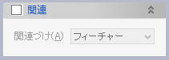

面上オフセット線
カーブをサーフェイスに沿ってオフセットします。
操作方法
カーブとサーフェイスを選択して、オフセット量を指定したらOKボタンをクリックします。
パラメータ
- カーブ
オフセットしたいカーブを選択します（複数選択可）。カーブがサーフェイス上にない場合は、投影線を作成してそれを選択してください。
- 対象面
選択したサーフェイス（フェイスまたはシートボディ）に沿ってカーブがオフセットされます。
- オフセット方法
オフセット量の指定方法を、距離指定と点指定のいずれかより選択します。
- 距離

オフセット距離を指定します。ドキュメントウィンドウ内にオフセット方向が矢印で表示されますので、必要に応じて「反転」チェックボックスで反転してください。
- オフセット位置点
位置入力ダイアログを利用してオフセットカーブの通過点を指定します。
- 距離
- 分割長（オプション）
通常はシステムが最適なトレランスで近似計算を実行しますが、必要であれば近似計算におけるカーブの分割長を指定することができます。
- 関連（オプション）


選択したカーブやサーフェイスとの関連づけの方法を指定します。既定値は「フィーチャー」です。